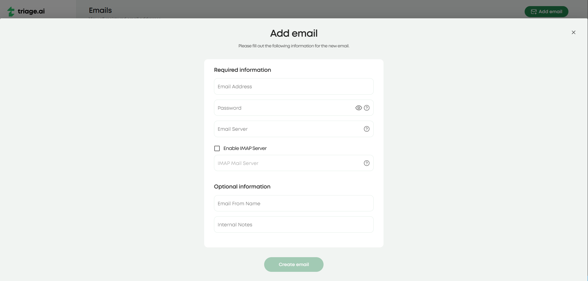

Email Settings
With triage.ai, you have the power to set up unlimited email addresses, giving you full control over your company’s mail accounts and email communication. Incoming emails are seamlessly converted to support tickets, empowering you to efficiently manage, organize, and archive all support requests in one place.
Email Templates
triage.ai comes with generic email templates for auto-responses, alerts, notices, and replies. Refer to Email Templates Guide for details on customizing templates.
Routing Incoming Emails
Setting up your system to accept emails varies from system to system and depends on your preference. triage.ai supports IMAP polling methods for routing incoming emails. Tickets are routed to the default department and assigned a default priority configured in settings.
To enable incoming email fetching, admins will head to the email tab and find where all the emails are listed. From there, IMAP servers can be configured for any listed or new emails.
IMAP POLLING
Each email address added to the system can have an associated account. See IMAP Settings Guide.
Outgoing Emails
By default, triage.ai uses the SMTP Mail function to send outgoing emails. Each email account will have its own SMTP and must be configured as such when created. There will be options for configuring sitewide emails for alerts based on ticket updates and system emails for sending account-related emails. These will be available to admins only in the email panel. Your SMTP provider will need to support TLS connections when sending outgoing emails. Rest assured, most modern email services do, and it is easy to verify if the one you’d like to use does support it, giving you the confidence of secure email communication.
Check Email Settings
For some email services, you must enable IMAP functionality in your account settings. This will usually be found under forwarding or an actual IMAP/POP tab and must be turned on if not already on.
You will also need to generate an app password to enable SMTP and IMAP functionality, as most modern email services no longer allow for less secure app access. This will be covered in more detail in IMAP Settings Guide.